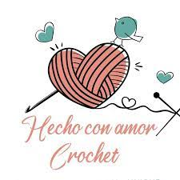

Un poco de mi historia
Mi nombre es Natalia, soy de la ciudad de Tandil. Desde chiquita me
gusta tejer, aprendi de mi abuela que siempre lo hacia cerca mio y es por eso que de grande decidi crear mi
emprendimiento!
Esto de lo que me gusta hacer hace tantos años. espero que les guste tanto como a mi y lo reciban con el
mismo
cariño que yo
